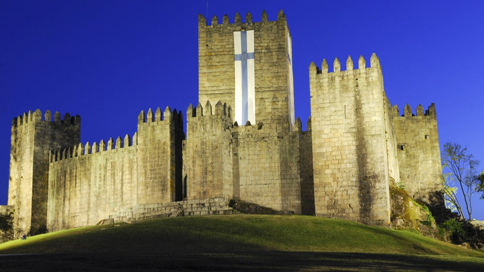
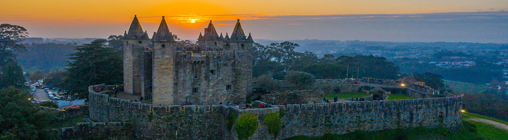

Visite os Castelos de Portugal
Os castelos são atracções turísticas imperdíveis na Europa. Neles respiramos história, revivemos batalhas, conhecemos lugares espectaculares e libertamos nossa imaginação.
São milhares de fortificações que foram erguidas na Idade Média e estão espalhadas por todo Velho Continente. Após muito trabalho e muitos castelos percorridos, elaboramos uma lista com os dez castelos mais bonitos de Portugal.
Eis uma lista de castelos:
- Castelo de Santa Maria da Feira (Norte)
- Castelo de Guimarães (Norte)
- Castelo de Porto de Mós (Centro)
Douro Minho

Castelo São Jorge
Serra do Pilar

Torre de Belém

Castelo de Santa Maria da Feira
Portal Turismo Portugal
25057- Tec Esp Tec Progr Sist Informação (N5)
Copyright © 2025 - Formador Kundan e Formando Álvaro Faria - Todos os Direitos Reservados